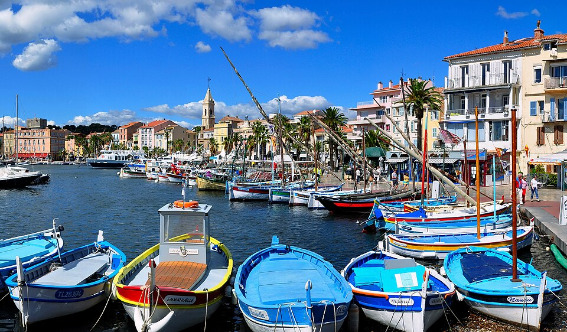

Sanary-sur-Mer • 1933–1940
📍 Office de Tourisme de Sanary (1 Quai du Levant)

0 / 13 étapes visitées
Vous avez parcouru la mémoire de la « capitale mondiale de l’exil artistique et littéraire » (1933–1940).